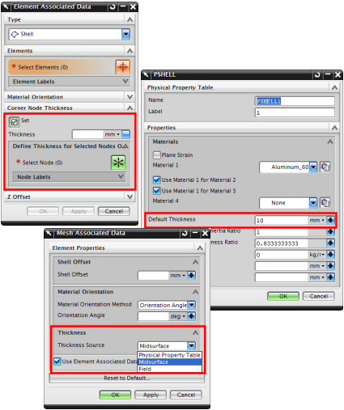

求解器、单元公式以及模型的需要将决定如何指派壳单元的厚度，您可以：
在物理属性表中指派网格收集器的默认厚度，您可以把2D 壳单元的默认厚度定义为一个常数值或者一个 NX 表达式
从中面数据指定单元继承厚度信息，您只能在2D 网格与中面关联时这么做，对于网格，在网格关联数据对话框中，将厚度源设置为中面

由于厚度值可以分配给网格收集器、单个网格、选定的单元或者选定的节点，软件将按优先顺序确定写入到求解器输入文件中的厚度值：
不管您如何定义壳厚度，您都必须在物理属性表中为网格收集器指定一个默认的厚度
在网格关联数据中定义的中面和基于字段的厚度值将覆盖默认厚度
在单元相关数据中定义的拐角节点厚度值将覆盖中面和基于字段的厚度值